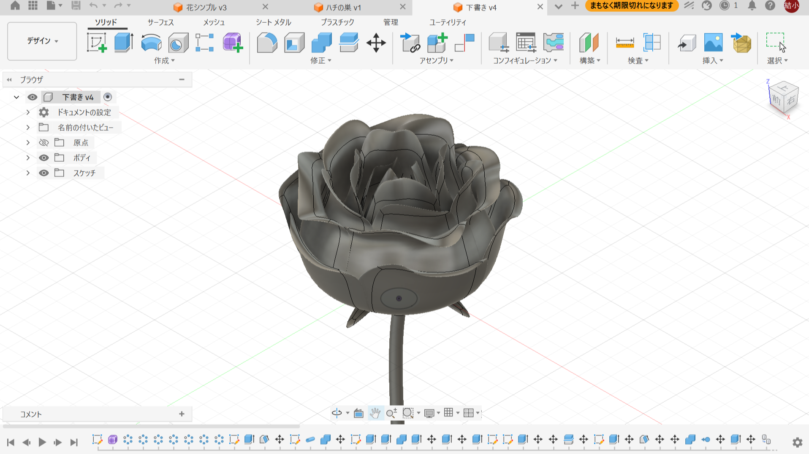
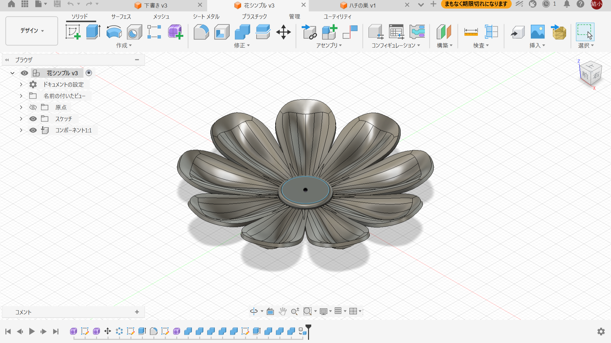
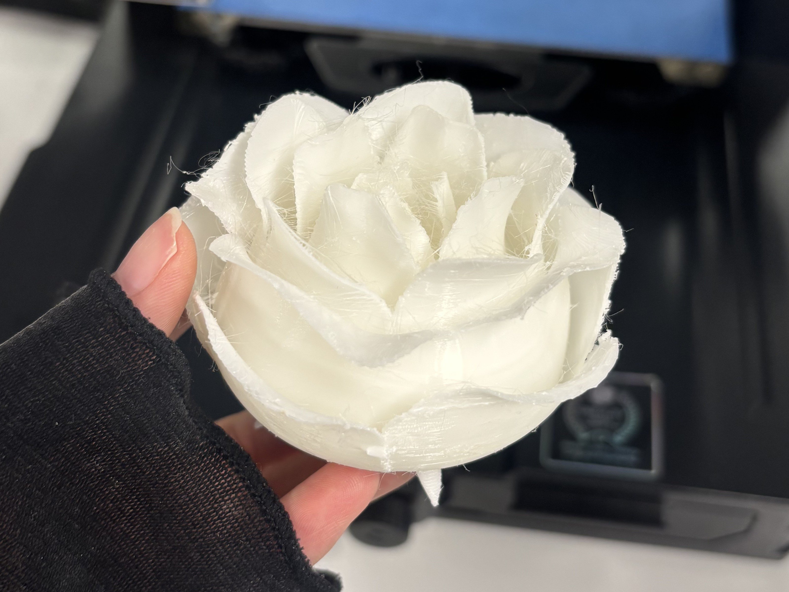
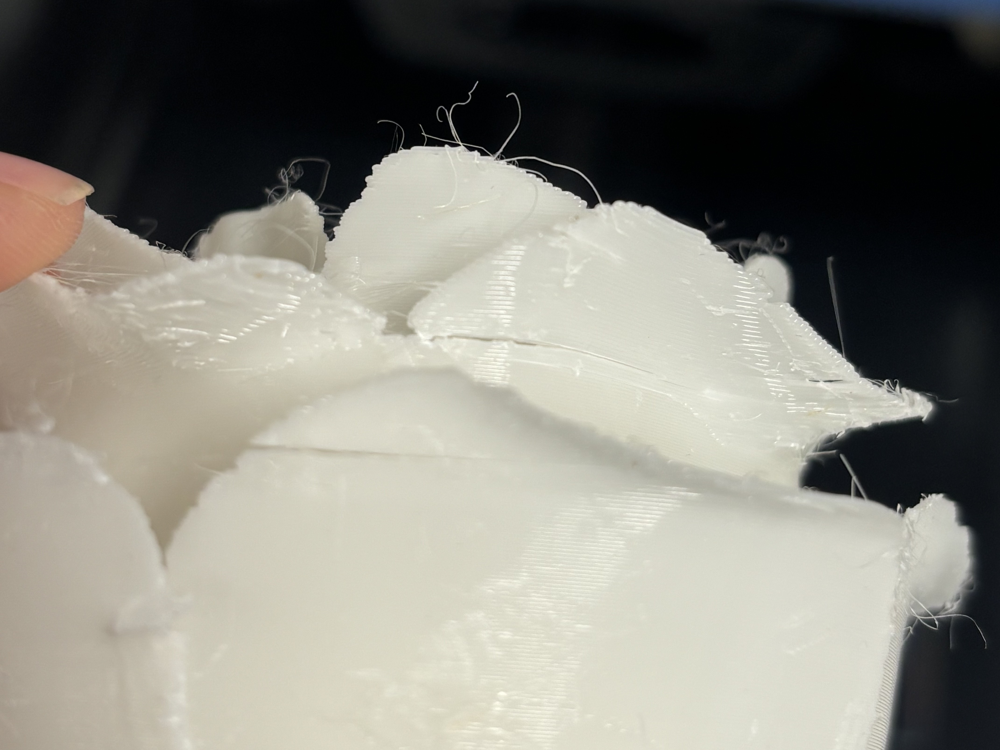
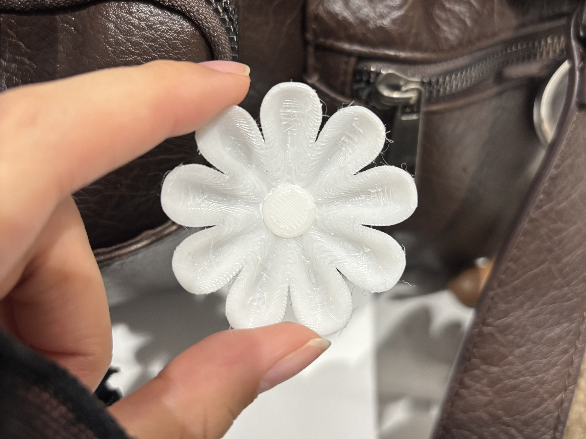

植物のモデリングは初めて行うため、練習もかねて花のモデリングを行った。
バラの曲線を表現したいため、fusionのフォームの機能を使用。


サポートを取るのに苦戦しましたが、きれいに印刷できました。花びらが一部割れてしまった。
バラの茎はプリンターから外す衝撃で折れてしまったので、もう少し太くする必要がある。



ペレットを使って何をつくるか
いくつかアイデア出しをしてみました。「椅子」「スピーカー」
この中でスピーカーを作ることに決定しました。
つづき
プロジェクトノート「ハチの巣スピーカー」